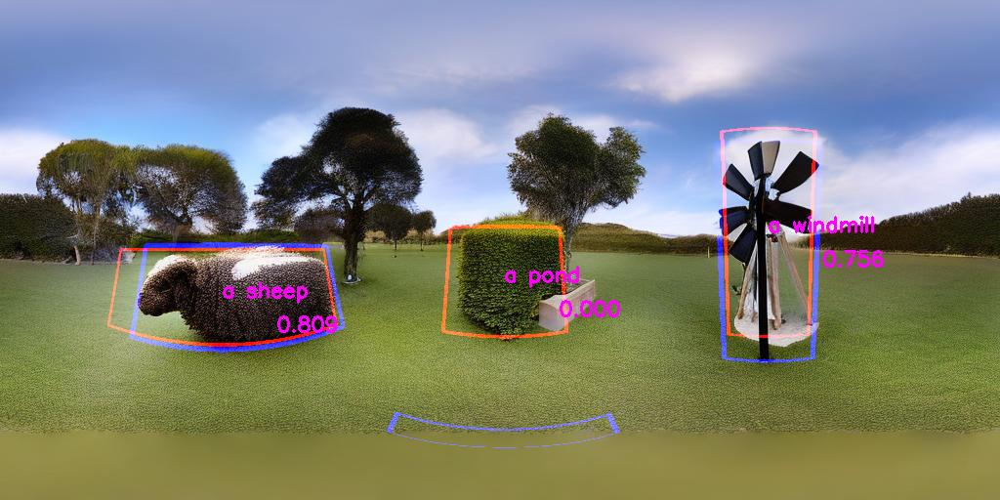

|
||
Abstract
Recent advancements in text-to-image (T2I) have improved synthesis results, but challenges remain in layout control and generating omnidirectional panoramic images. Dense T2I (DT2I) and spherical T2I (ST2I) models address these issues, but so far no unified approach exists. Trivial approaches, like prompting a DT2I model to generate panoramas can not generate proper spherical distortions and seamless transitions at the borders. Our work shows that spherical dense text-to-image (SDT2I) can be achieved by integrating training-free DT2I approaches into finetuned panorama models. Specifically, we propose MultiStitchDiffusion (MSTD) and MultiPanFusion (MPF) by integrating MultiDiffusion into StitchDiffusion and PanFusion, respectively. Since no benchmark for SDT2I exists, we further construct Dense-Synthetic-View (DSynView), a new synthetic dataset containing spherical layouts to evaluate our models. Our results show that MSTD outperforms MPF across image quality as well as prompt- and layout adherence. MultiPanFusion generates more diverse images but struggles to synthesize flawless foreground objects. We propose bootstrap-coupling and turning off equirectangular perspective-projection attention in the foreground as an improvement of MPF.
MultiStitchDiffusion
We integrate StitchDiffusion with the region-based variant of MultiDiffusion. The input includes a background text prompt and N masks with corresponding local prompts. We preprocess the masks and extend the edges cyclically to handle the stitching step. Inference is split into multiple processes, each handling one mask and prompt. After every denoising step, latents are merged as in MultiDiffusion. |
Implementation
StitchDiffusion can be modified to handle foreground object prompts and corresponding region masks by our provided code. |
Results
 |
|
 |
|
 |
MultiPanFusion
As our second method, we use PanFusion as our base model and integrate MultiDiffusion into the inference process. To maintain alignment, masks are rotated alongside latents during each denoising step. After denoising, latents are merged as in MD. Initially, we integrate MD into the panorama branch only. To improve consistency during denoising, we extend MD to the perspective branch by projecting masks from ERP to perspective format and applying MD similarly to the panorama branch. |
Results
 |
 |
|  |  |
 |
Dense-Synthetic-View
DSynView is a new synthetic dataset containing spherical layouts to evaluate our models. We combined three text-prompts used for conditioning the background with two different sets of up to three fitting foreground prompts associated with self-created masks. These masks and the code used to generate reference images can be found here. |
Paper
Spherical Dense Text-to-Image Synthesis
|
Bibtex